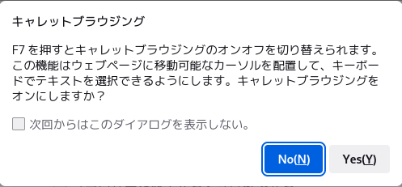

開発・配布先サイトは、https://www.mozilla.org/ja/firefox/ です。Firefox の開発に当っては、将来 Mozilla Browser に置き換わる、より高速で起動し軽快な操作を可能とするブラウザーの実現が目標とされています。
$ tar -xzvf firefox-1.5.0.1.tar.gz
# apt-get install firefox
$ ln -s home/hoge/firefox/firefox ~/Desktop/firefox(この例は、Fedora Core 1 で、ユーザー名 hoge としてログインしている場合なので、適宜読み替えてください。)
「新しいソフトウェアアップデート機能によって、セキュリティパッチや新バージョンを簡単に入手できるようになりました。 Firefox は小さな差分ファイルをバックグラウンドで自動的にダウンロードして、インストールの準備ができたことを知らせてくれます。」
したがって、ディストリビューターが配布する専用の Firefox
パッケージを利用しなくても、セキュリティ上の更新を随時適用することが可能です。
この設定変更は、メニューの[編集] > [設定] > [詳細] > [更新]タブ より行います。
Firefox
公式サイトより、各国語版の「言語パック(.xpi)」が配布されています。このパッケージを追加インストールすれば、言語環境を変更
（または追加）でき ます。
ただしこの配布は、基本的に公式パッケージに適用することが前提です。
Firefox 2.0 のサイドバーの最小幅は 150px に制限されており、Firefox 1.5 や Mozilla
から挙動が変更されました。
これより狭くするには、userChrome.css に以下の内容を追加してください。
#sidebar {
min-width: 0px !important;
}
具体的には、ユーザーの ~/.mozilla/firefox/hoge.default/chrome/ ディレクトリに上記3行の内容を userChrome.css というファイル名で保存します。
マウスオーバー辞書とは、ブラウザ内で英単語にマウスを重ねると瞬時に対訳を表示してくれる便利な辞書ツールです。マウス辞書 (mouse dictionary) とも呼ばれて います。アプリケーションでよくあるマウスオーバーのヘルプ機能が辞書に置き換わったような働きをする考えれば良いでしょう。
Firefoxブラウザで利用可能なアドオンとして作成されたマウスオーバー辞書としては、下記の2つがよく知られています。F7 キーを押せば、キャレットブラウズのモードへ切り替わります。再び F7 キーを押すと元のモードに戻ります。
参考情報
カーソルブラウズ https://blog.goo.ne.jp/awazoh/e/b6e1d79ce2e94423d9c364694b7ce841uBlock Origin
uBlock Origin is not an "ad blocker", it's a wide-spectrum content blocker with CPU and memory efficiency as a primary feature.User Agent Switcher and Manager
https://github.com/gorhill/uBlock#ublock-origin
"User Agent Switcher and Manager" spoofs browser's User-Agent string. This string is used by web servers to provide content to you. Based on your browser type and operating system, web servers might provide different HTML content (like a different styling or lower resolution images) or JavaScript engine might operate differently. Using this extension you can alter your browser's "User-Agent" string and hence get the content for that particular device of interest. One particular use case of this spoofing is to get the mobile content instead of the desktop content for faster and lighter web browsing.EPUBReader
https://add0n.com/useragent-switcher.html
Read epub files directly in the browser Avoid annoying download prompts and easily read ePub files directly in Firefox. Conveniently access previously saved ePub files right from the toolbar button.
https://www.epubread.com/en/
保存する際、任意の文字コードを指定して保存してください。
日本語の場合、以下の言語コード間で自由に変更できます。
EUC-JP
ISO-2022-JP
Shift_JIS
UTF-8
Gedit や Pluma、Mousepad などのテキストエディタでも修正することが可能ですが、Composer で「元のソース形式を保持する」にチェックを 入れないままで編集を行うと再び元に戻るので注意が必要です。
参照したサイト：SeaMonkey Composerについて＆空白が入る問題の解決法 - https://okayamania.com/blog/?p=1100お使いのデスクトップ環境によっては、Composer を起動しようとして戸惑う可能性があります。次の外部リンクを参照ください。
なお参考までに、Debian 5.0 で Seamonkey をユーザーのディレクトリへインストールした場合、次のコマンドで Composer が直接起動できます。デスクトップのパネルへは、同じコマンドで登録できます。
./seamonkey/seamonkey -edit
$ ./seamonkey/seamonkey -h
Usage: ./seamonkey/seamonkey-bin [ options ... ] [URL]
where options include:
X11 options
--display=DISPLAY X display to use
--sync Make X calls synchronous
--no-xshm Don't use X shared memory extension
--xim-preedit=STYLE
--xim-status=STYLE
--g-fatal-warnings Make all warnings fatal
SeaMonkey options
-h or -help Print this message.
-v or -version Print SeaMonkey version.
-P [profile] Start with [profile].
-migration Start with migration wizard.
-ProfileManager Start with ProfileManager.
-no-remote Open new instance, not a new window in running instance.
-UILocale [locale] Start with [locale] resources as UI Locale.
-safe-mode Disables extensions and themes for this session.
-jsconsole Open the Error console.
-addressbook Open the address book at startup.
-compose Compose a mail or news message.
-edit [url] Open Composer.
-mail Open the mail folder view.
-mail [URL] Open the message specified by this URL.
-news Open the news client.
-browser [url] Open a browser window.
-url [url> Open the specified url.
-chrome [url] Open the specified chrome.# apt-get install mozilla-thunderbird
パッケージリストを読みこんでいます... 完了
依存関係ツリーを作成しています... 完了
提案パッケージ:
mozilla-thunderbird-offline mozilla-thunderbird-typeaheadfind
mozilla-thunderbird-inspector mozilla-firefox mozilla-thunderbird-enigmail
推奨パッケージ:
xprint
以下のパッケージが新たにインストールされます:
mozilla-thunderbird
アップグレード: 0 個、新規インストール: 1 個、削除: 0 個、保留: 0 個。
11.6MB のアーカイブを取得する必要があります。
展開後に追加で 33.8MB のディスク容量が消費されます。
取得:1 http://ftp.jp.debian.org stable/main mozilla-thunderbird 1.0.2-2.sarge1.0.7 [11.6MB]
11.6MB を 24s で取得しました (465kB/s)
パッケージを事前設定しています ...
未選択パッケージ mozilla-thunderbird を選択しています。
(データベースを読み込んでいます... 現在 113158 個のファイルとディレクトリがイン ストールされています。)
(.../mozilla-thunderbird_1.0.2-2.sarge1.0.7_i386.deb から) mozilla-thunderbird を展開しています...
Successful preinst
mozilla-thunderbird (1.0.2-2.sarge1.0.7) を設定しています ...
Returned debconf: GNOME
Updating mozilla-thunderbird chrome registry...done.
この現象は、RHEL、CentOS 4.x をはじめとする RHEL クローンだけでなく、Debian 3.1、Progeny Debian など多くのディストリビューションで起きる問題です。それぞれ、対処方法が異なります。
RHEL、CentOS 4.x を始めとする RHELクローン
日本語化パッケージ ja-JP.fix.xpi を入手しインストールします。このパッケージは、日本語環境で Thunderbird
を運用したい場合には極めて重要な追加パッケージです。インストール後、次のコマンドで日本語メニューを表示できます（グラフィカルメ
ニューから起動する には -UILocale ja-JP オプションを付けてパネルに登録します）。
Debian 3.1 (Sarge)、Progeny Debian
次のパッケージを入手しインストールします（上記の ja-JP.fix.xpi は使えません）。
日本語化パッケージ mozilla-thunderbird-locale-ja
このパッケージは、etc/apt/souces.list に以下の APT ラインを追加し、
deb http://www.01.246.ne.jp/~hatch/original/mozilla-thunderbird-locale-ja/ ./
apt-get コマンドでインストールします。
# apt-get update
# apt-get install mozilla-thunderbird-locale-ja
パッケージリストを読みこんでいます... 完了
依存関係ツリーを作成しています... 完了
以下のパッケージが新たにインストールされます:
mozilla-thunderbird-locale-ja
アップグレード: 0 個、新規インストール: 1 個、削除: 0 個、保留: 0 個。
294kB のアーカイブを取得する必要があります。
展開後に追加で 1147kB のディスク容量が消費されます。
取得:1 http://www.01.246.ne.jp ./ mozilla-thunderbird-locale-ja 1.0.2+0.6.10.1-0jb1 [294kB]
294kB を 1s で取得しました (271kB/s)
未選択パッケージ mozilla-thunderbird-locale-ja を選択しています。
(データベースを読み込んでいます... 現在 113705 個のファイルとディレクトリがイン ストールされています。)
(.../mozilla-thunderbird-locale-ja_1.0.2+0.6.10.1-0jb1_all.deb から) mozilla-thunderbird-locale-ja を展開しています...
mozilla-thunderbird-locale-ja (1.0.2+0.6.10.1-0jb1) を設定しています ...
Updating mozilla-thunderbird chrome registry...done.
インストール後、Thunderbird を通常の手順で起動すれば、日本語表示となります。
まず、メールの保存方法が次のとおり異なっています。
Sylpheed: メールディレクトリ方式（１ファイルに１メール）
Thunderbird: メールボックス形式（１ファイルに複数のメール）
Sylpheed はメッセージが MH形式になっており、他のMH形式を使用したメーラー（Mew等）と併用できます。MH形式では、 1つのメールが1つのファイルとして保存される方式（メールディレクトリ方式）なので、障害が発生しても過去のメールを失う危険性が 少なくなっています。そして、メール受信、作成、移動、保存などに関係な く、速い反応速度が期待できるそうです。
また、Sylpheedでは、HTMLメールを作成できませんが、HTMLメールを送りたい場合は、別のツールで作成し添付ファイルで送ることができます。
Sylpheed 2.0 の標準設定は、メッセージビューに画像を表示します。
[メニュー] > [設定] > [全体の設定] > [メッセージ] > [画像をインラインで表示する]
のチェックを外せば、画像の代わりにそのファイル名を表示します。
Bogofilter または Bsfilter の利用を想定して予め設定が行われています。
したがって、まず Bogofilter または Bsfilter
をインストールする必要があります。その後で、迷惑メール機能を有効にします。
迷惑メールを即刻削除したいときは、「迷惑メールフォルダ」に既存の「ごみ箱」を指定すると便利です。
Sylpheed の学習コマンドは、次のとおりです（Bogofilter の場合）。
迷惑メール：
bogofilter -s -I
非迷惑メール：
bogofilter -n -I
判定コマンド：
bogofilter -I
# apt-get install bogofilter
（スクリーンショットは bsfilter 利用の場合）
# apt-get install bsfilterパッケージリストを読み込んでいます... 完了
■Sylpheed 2.2.0 で、迷惑メールフィルターを利用する場合には、以下参照のこと。
Bayesian, Bayes, and naive Bayes are often used in discussion of POPFile and similar email filters which usually refers to a mathematical formula.
In the 1700's Thomas Bayes was a man who studied probability, his work has since become known as Bayesian Statistics. And this method has recently become popular in email filtering because it does a very good job determining between different groups of messages.
Bayes Theorem gives POPFile a way to calculate the probability that an email is work, personal or spam by calculating P(work|E), P(personal|E), and P(spam|E) where E is the new email and P(work|E) is the probability of email E being a 'work' email and so on. By picking the largest probability of the three POPFile can automatically pick the appropriate folder. POPFile calculates these probabilities by looking at the frequency with which words occur in each folder and applying Bayes Theorem.
設定 ＞ 全般の設定 ＞ 詳細 ＞ インターフェース ＞ [起動時に受信箱を開く] ＞ [OK] または [適用]
Configure your GNOME mail reader in (Foot Menu)->Desktop
Preferences->Preferred Applications->Mail Reader
sylpheed %s
Debian 4.0 (Etch) へ Sylpheed をインストールするには、次のコマンドを実行します。(旧情報：3.1-Sarge で Sylpheed 2.0 を利用するときはこちら参照)
# apt-get install sylpheed sylpheed-i18n
入手先
何らかの事情で再インストールする場合には、パッケージ管理ツールで gftp を削除するだけでは不十分です。ユーザーディレクトリに存在する .gftp フォルダを手動で削除する必要があります。このフォルダには、以下のファイルが含まれます。
bookmarks
gftp.log
gftprc
グラフィカルなダウンロードツール。HTTPと ftpをサポート。
http://aria.rednoah.com/linux_j.shtml
Debian の場合、公式パッケージに含まれるのでインストールは簡単です。
# apt-get install aria
パッケージリストを読みこんでいます... 完了
依存関係ツリーを作成しています... 完了
以下のパッケージが新たにインストールされます:
aria
アップグレード: 0 個、新規インストール: 1 個、削除: 0 個、保留: 0 個。
681kB のアーカイブを取得する必要があります。
展開後に追加で 2056kB のディスク容量が消費されます。
取得:1 http://ftp.jp.debian.org stable/main aria 1.0.0-9.0.1 [681kB]
681kB を 1s で取得しました (345kB/s)
未選択パッケージ aria を選択しています。
(データベースを読み込んでいます... 現在 113104 個のファイルとディレクトリがイン ストールされています。)
(.../aria_1.0.0-9.0.1_i386.deb から) aria を展開しています...
aria (1.0.0-9.0.1) を設定しています ...
$ aria
Webサーバ・FTPサーバから指定ファイルをダウンロードするテキストベースツール
$ wget -h
$ wget -r -l 1 -np -nc [URL]再帰ダウンロードの詳細と注意事項については、こちらを参照してください。
上記項目で紹介した、ファイル・ダウンロード・ソフト wget の GUIフロントエンド。
Gwget（Download Manager for GNOME）
使い方は、wget コマンドをGUIで使うにはが参考になります。
{kind=link}
{kind=link}
{kind=link}